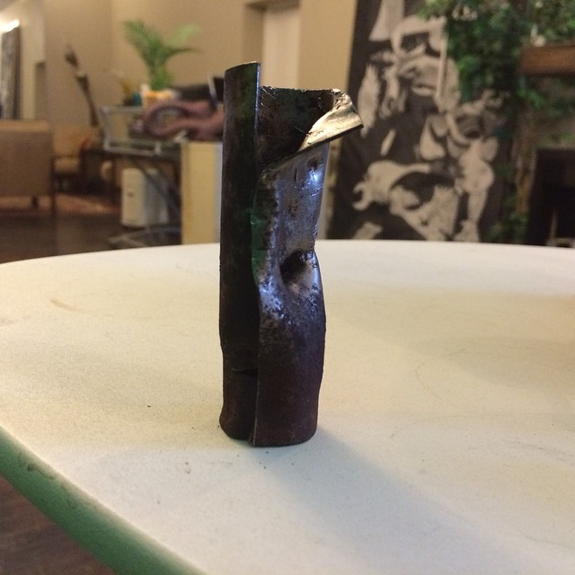

Sage Lewis Facebook Archive: Post 568
Aug 04, 2014 11:49:59am

Timeline photos
That right there represents Persistence incarnate for me. It's a spark plug well that almost made me give up. But I got it out & changed the last plug. Human wins!
Back to Index